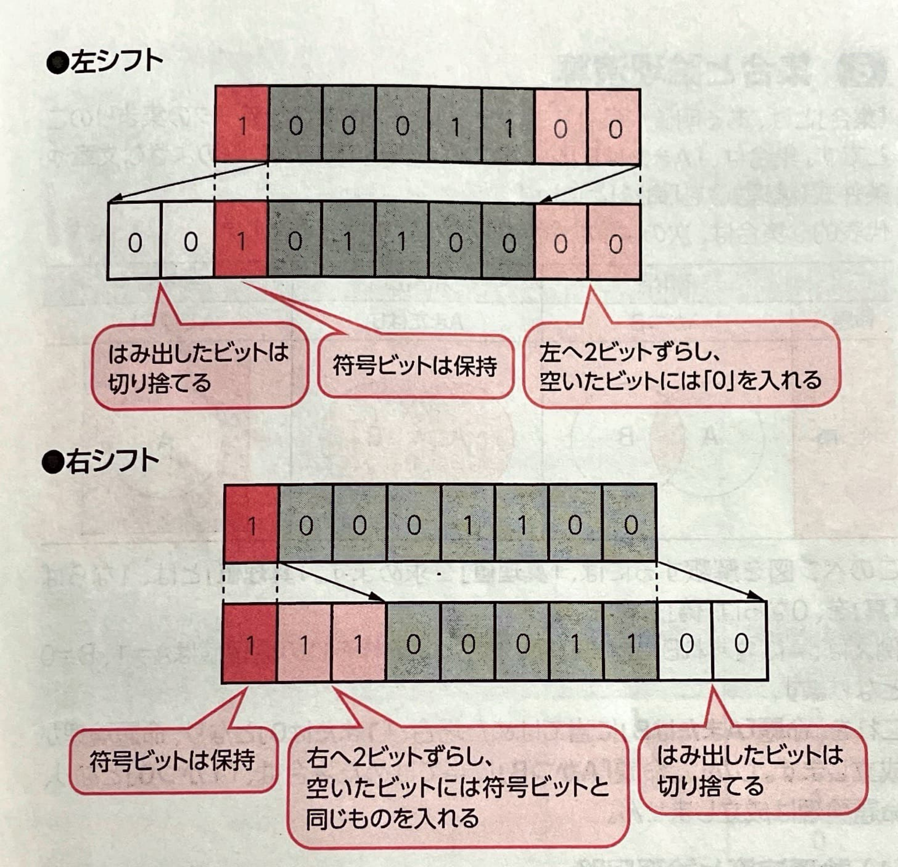
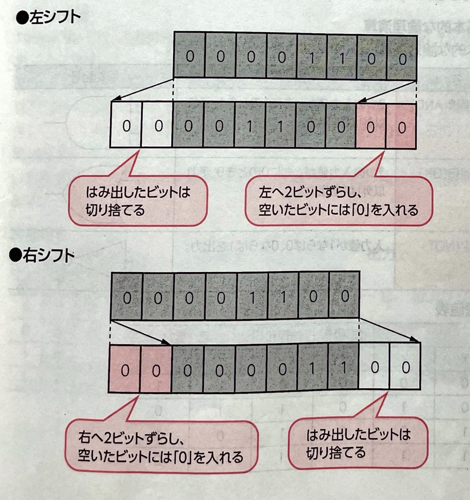

【 シフト演算 】
｢シフト演算｣とは、ビットの位置を左または右にずらすことで、数値の乗算や除算を高速に処理する演算方法のことです。
ビットの位置を左にずらす(左シフト)と、元の数の2のn乗倍(2のn乗で乗算)になり、ビットの位置を右にずらす(右シフト)と、元の数の2の-n乗倍(2のn乗で除算)になります。
シフト演算には、｢算術シフト｣と｢論理シフト｣があります。
(1)算術シフト
｢算術シフト｣とは、正負を考慮した数値演算を行うときに使うシフト演算のことです
符号ビットを除くビット列をシフトし、はみ出したビットは切り捨て、空いたビット位置には、左シフトの場合は0、右シフトの場合は符号ビットと同じ値を格納します。

(2)論理シフト
｢論理シフト｣とは、数値演算ではなく、単にビットの位置を移動するときに使うシフト演算のことです。
符号ビットを含むすべてのビット列をシフトし、はみ出したビットは切り捨て、空いたビット位置には0を格納します。
